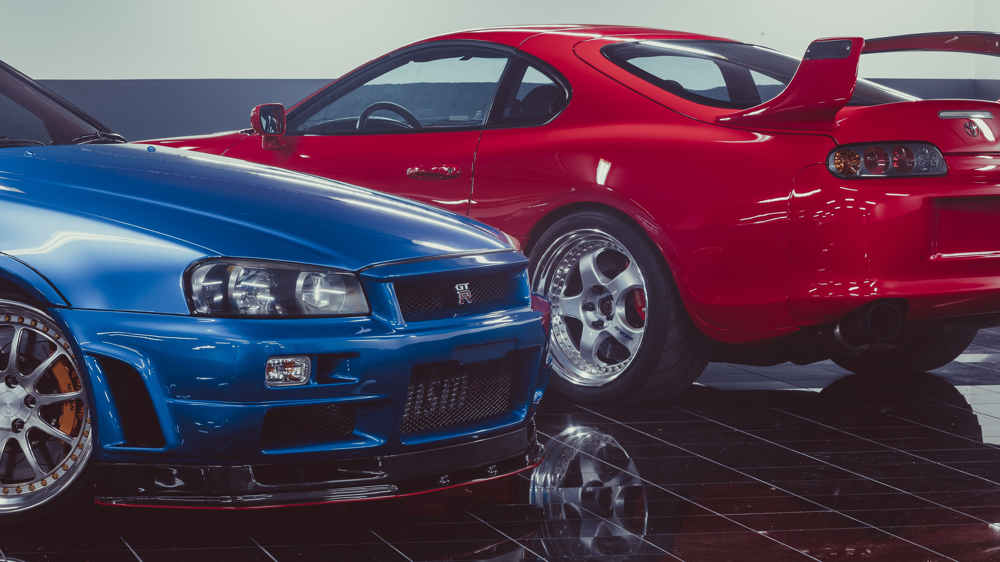

Icons with a worldwide following
JDM stands for Japanese Domestic Market. The term is often used by enthusiasts when discussing vehicles and parts originally made for Japan. Japanese performance cars have earned fans through engineering, motorsports, and a wide range of customization options.
Popular examples
- Nissan Skyline GT-R
- Toyota Supra
- Mazda RX-7
From carefully restored classics to personalized builds, JDM culture gives owners many ways to express their style.